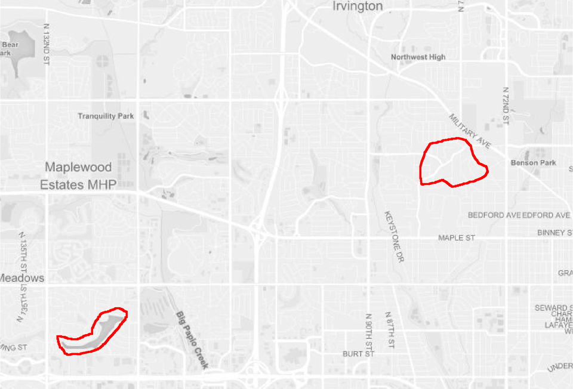
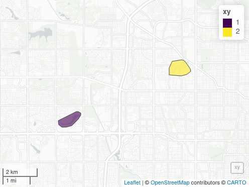
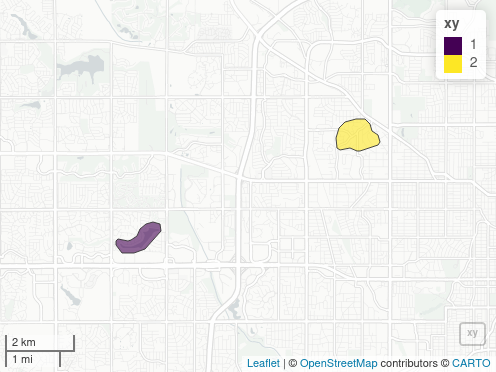
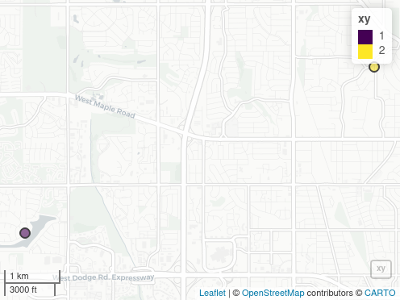
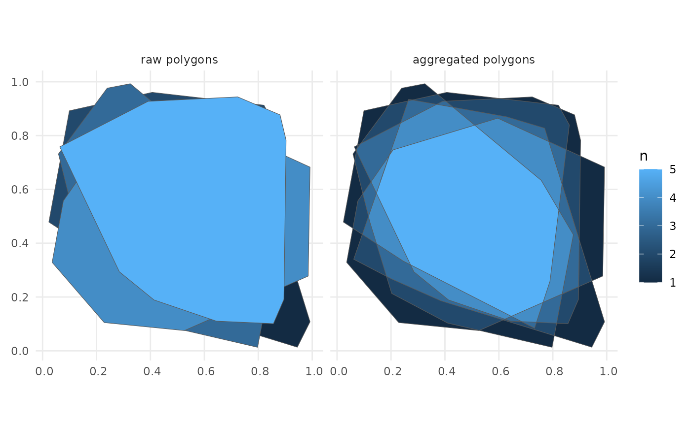
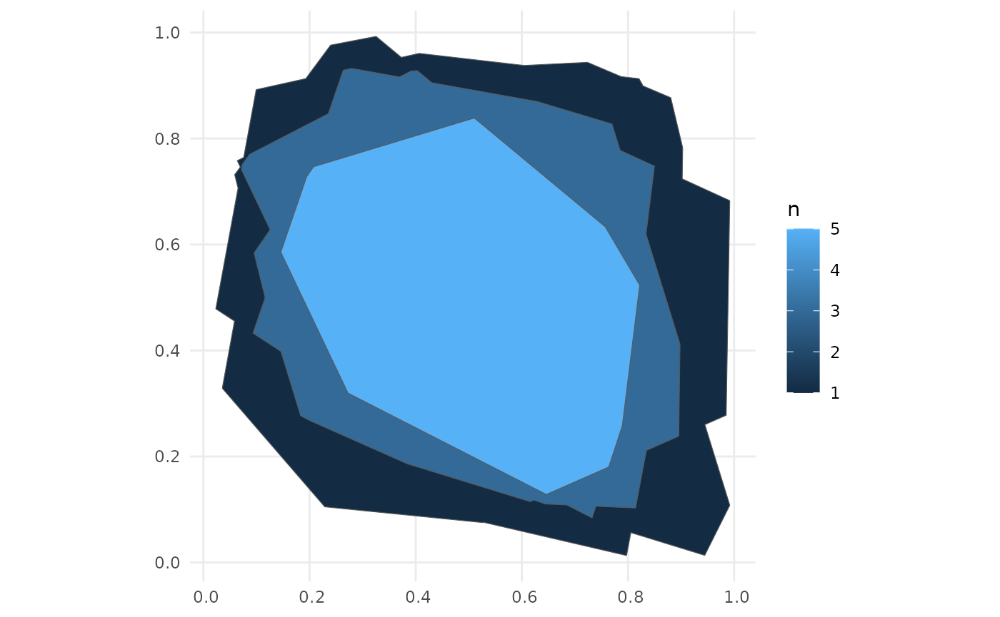
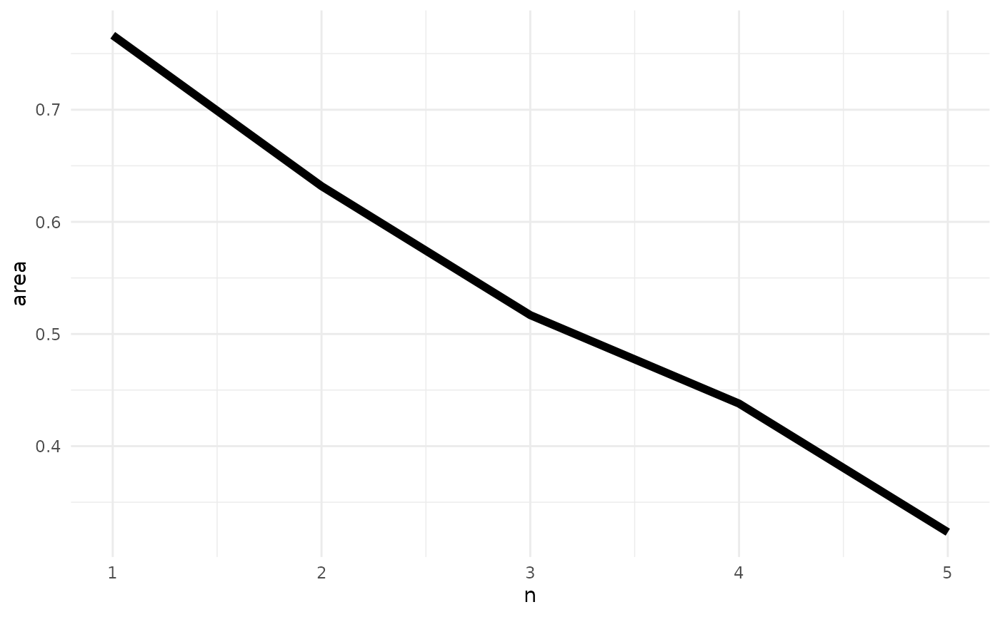

mapscanner
Mark Padgham and Michael D. Sumner
2021-07-13
Source:vignettes/mapscanner.Rmd
mapscanner.RmdWhat does this package do for me?
mapscanner is an R package that enables lines drawn by hand on maps to be converted to spatial objects. The package has two primary functions: one for producing maps, and one for rectifying hand-drawn lines to the coordinate system of the original map. The package is intended for use in social surveys and similar endeavours in which hand-drawn markings on maps need to be converted to spatial objects. Maps can be either paper- or screen-based. Markings on paper maps need to be scanned, photographed, or otherwise digitised, while maps with screen-based markings need to be saved as .png- or .pdf-format images.
How do I use it?
Installation
mapscanner is not yet on CRAN, so must be installed with the remotes package, via any one of the following options:
remotes::install_github ("ropensci/mapscanner")
remotes::install_git("https://git.sr.ht/~mpadge/mapscanner")
remotes::install_bitbucket("mpadge/mapscanner")
remotes::install_gitlab("mpadge/mapscanner")After that, the library can be loaded with
Usage
The package is designed to enable the following workflow:
Generate a map with the
ms_generate_map()function, which automatically produces both.pdfand.pngversions;Either print the
.pdfversion to use as desired in any kind of survey environment, or use either the.pdfor.pngversions in digital form for screen-based surveys.Draw on the map;
For paper maps, digitise the drawn-on (from here on, “modified”) map, converting it to either
.pdfor.pngformat; andRectify the modified version against the original via the
ms_rectify_map()function, which distinguishes individual annotations, and converts each one to a spatial object able to be analysed in any desired manner.
Practical tips
The mapscanner package is intended to aid a practical workflow, and so a few practical tips may be recommended here to ensure best results:
- The original digital files generated with
ms_generate_map()are necessary to rectify subsequently drawn-on and scanned maps, and so must be retained at all times. - Marks drawn on maps should be coloured – any black or grey markings will be ignored. This has the advantage that individual annotations not intended to be converted to spatial objects (such as unique identification or participant codes) may be made on maps in black or grey.
- For drawings of areas, best results will be achieved through ensuring that all lines form closed polygons. While the default
type = "hulls"argument should work even when lines are not closed, thetype = "polygons"argument will generally produce more accurate results, yet should only be used when all lines form closed polygons (see below for details on how these two differ). - Digitised versions of paper maps should contain white borders, so do not, for example, photograph modified maps lying on dark surfaces. If maps are to be photographed, then best results can be achieved by simply placing them on a larger, enclosing sheet of white paper.
The following two sections describe the two primary functions of the mapscanner package, corresponding to the two primary steps of producing maps to be used in surveys (or other activities), and rectifying modified maps against these originals in order to extract spatial objects. The second of these sections also describes the kinds of markings able to be recognised, and the kinds of spatial objects to which these may be converted.
Mapbox API tokens
Map generation with mapscanner requires a personal token or key from mapbox, which can be obtained by following the links from https://docs.mapbox.com/api. If you already have a token, the easiest way to use it with mapscanner is to create (or edit) a file ~/.Renviron, and insert a line,
This will then be available every time you start R, without any need to explicitly set the token each time you want to use the package. The token may be given any unique name that includes “mapbox” (case insensitive). Alternatively, if you wish to keep your token truly private, and only use it for your current R session, you may load mapscanner, and then run set_mapbox_token(<my_mapbox_token>).
Map generation
Having obtained and set a mapbox token as described above, the ms_generate_map() function can be used to generate printable maps for a specified bounding box in both .pdf and .png formats. Usage is a simple as,
ms_generate_map ("chennai india", mapname = "chennai")## Successfully generated 'chennai.pdf' and 'chennai.png'The two generated maps are saved in the current working directory (getwd()). To save maps in alternative locations, the mapname parameter can optionally specify paths. To provide finer control over the scales of maps, precise bounding boxes can also be submitted. To determine desired bounding boxes, we recommend using the ‘openstreetmap.org’ website, zooming to a desired area, then clicking the “Export” button. A window will appear which includes the bounding coordinates of the current screen. Even finer control can be gained by clicking beneath this coordinate window on the line which says, “Manually select a different area,” which brings a drag-able rectangle onto the current screen. The coordinates in the bounding box then simply need to be entered in to the bbox parameter of ms_generate_map() in the order (xmin, ymin, xmax, ymax) – or anti-clockwise from the left-hand coordinate.
The amount of detail in resultant maps is controlled by the max_tiles argument, with larger values producing more detail, and resulting in larger file sizes. The default value of max_tiles = 16L (where the L symbol tells Rto treat the value as an integer) should produce acceptable results for maps extending across hundreds of metres to a few kilometres. Smaller-scale maps may require higher values, and vice-versa. Map generation is relatively fast, and so different values can be readily trialled.
Maps are generated in two formats, because the .pdf version will generally be the most convenient for printing, while the png version should be retained as the “master” copy against which to rectify subsequently scanned-in version. Behind the scenes, the function downloads a series of vector map tiles from mapbox, and converts them to a rasterBrick object from the raster package. This rasterBrick object is invisibly returned from the function:
x <- ms_generate_map ("chennai india", mapname = "chennai")## Successfully generated 'chennai.pdf' and 'chennai.png'
x## class : RasterBrick
## dimensions : 1147, 562, 644614, 3 (nrow, ncol, ncell, nlayers)
## resolution : 38.21851, 38.21851 (x, y)
## extent : 8921157, 8942635, 1442787, 1486624 (xmin, xmax, ymin, ymax)
## crs : +proj=merc +a=6378137 +b=6378137 +lat_ts=0 +lon_0=0 +x_0=0 +y_0=0 +k=1 +units=m +nadgrids=@null +wktext +no_defs
## source : memory
## names : index_1.1, index_1.2, index_1.3
## min values : 107, 107, 107
## max values : 254, 254, 254This rasterBrick object contains raster information for the three colour channels of the image, and so may also be used for immediate viewing within R with raster::plotRGB(x).
Standard uses of the package should not need to explicitly access or modify these data, but it is nevertheless possible to do so, and then use a custom-modified object to produce the external .pdf and .png files by submitting the rasterBrick object to ms_generate_map():
ms_generate_map (raster_brick = x, mapname = "chennai")Map rectification
Having produced digital maps using the ms_generate_map() function as described above, and having printed, variously drawn-on, and, for paper maps, scanned the result back in to digital form, the package can then be used to rectify the hand-drawn markings against the original map with the ms_rectify_map() function, which returns the drawn-on objects as spatial objects in Simple Features (sf) format. The only requirement is that the drawn-on objects are coloured; black or grey objects will be ignored. As described above, this has the advantage that maps may be annotated in ways not intended to be converted to spatial objects (such as adding unique identification or participant codes), through simply providing such annotations in grey or black.
The ms_rectify_map() function has two primary arguments, specifying the names (and locations) of the original and modified map files – in that order: ms_rectify_map(original, modified). These files should ideally be in .png formats, but will be auto-converted from .pdf if needed. The package comes with two sample maps, both in .png format. The first is the reference version needed for rectification, while the second has two red lines drawn upon it:

Converting the lines on this scanned image file is then as simple as:
f_orig <- system.file ("extdata", "omaha.png", package = "mapscanner")
f_mod <- system.file ("extdata", "omaha-polygons.png", package = "mapscanner")
xy <- ms_rectify_map (f_orig, f_mod, nitems = 2)
xy## Simple feature collection with 2 features and 0 fields
## Geometry type: POLYGON
## Dimension: XY
## Bounding box: xmin: -96.11801 ymin: 41.26638 xmax: -96.02722 ymax: 41.30108
## Geodetic CRS: WGS 84
## geometry
## 1 POLYGON ((-96.10692 41.2684...
## 2 POLYGON ((-96.0276 41.2964,...The result of ms_rectify_map() can be plotted using any standard option for plotting spatial data, such as through online mapping packages such as mapview:

Types of map markings and types of spatial objects
The ms_rectify_map() function has an additional argument, type, which takes the following values:
-
type = "hulls"(the default), which returns convex or concave hulls around distinct sets of contiguously marked lines, regardless of whether those lines form closed polygons or not (see function help for details). -
type = "polygons", which returns the outlines traced around each individual drawn object. This tracing is pixel-based, resulting in polygons with one spatial point for each scanned pixel. This may generate spatial objects that are both overly large as well as visually pixillated. The function includes an additionaldownsampleparameter which down-samples and smooths the resultant polygons by the specified multiple. -
type = "points", which returns single points (as geometric centroids) for each object. This is useful for identification of individual point locations regardless of the kinds of marks actually drawn on a map (dots, circles, crosses, or any shape, should all give equivalent results).
The type of polygons assumes – and indeed requires – that the drawn objects are closed polygons (as illustrated in the first of the above figures), so care must be taken to ensure this is in fact the case. Any lines that do not form closed circles will not be appropriately translated. Algorithms for extracting objects with type = "polygons"are fundamentally different from type = "hulls". The latter applies convex or concave-hull tracing algorithms, while the former explicitly traces every individual pixel of a contiguous object, and returns the external boundary comprised of the coordinates of all pixels lying on that boundary. This will thus often produce more accurate and detailed results, yet as mentioned should only be applied where markings form strictly closed polygons. All other cases in which areal rather than point-based results are desired should use the default type = "hulls". Examples include participants being asked to colour particular areas using any desired kind of marks, enabling areal-filling scribbles can be converted to polygons representing the outer boundaries.
The "polygon" and "point" types are illustrated in the following maps:
f_orig <- system.file ("extdata", "omaha.png", package = "mapscanner")
f_mod <- system.file ("extdata", "omaha-polygons.png", package = "mapscanner")
xy <- ms_rectify_map (f_orig, f_mod, type = "polygons", quiet = TRUE)
f_orig <- system.file ("extdata", "omaha.png", package = "mapscanner")
f_mod <- system.file ("extdata", "omaha-polygons.png", package = "mapscanner")
xy <- ms_rectify_map (f_orig, f_mod, type = "points", quiet = TRUE)
Bonus Feature: Polygon Aggregation
Maps are typically used in social surveys to delineate participants’ understanding or perception of particular regions or areas. In such contexts, surveys often result in numerous polygonal shapes representing different perceptions of a particular region. The mapscanner package provides an additional function, ms_aggregate_polys(), to aggregate polygons into a single “heat map” containing vector outlines of aggregated polygons. Each component of these aggregated polygons defines the region within which n polygons overlap.
The function is now illustrated with a slightly more complicated version of the example provided for ms_aggregate_polys(), starting by generating a series of polygons as convex hulls surrounding random points.
n <- 5 # number of polygons
polys <- lapply (seq (n), function (i) {
nxy <- 20 # number of points used to generate hull
xy <- matrix (runif (2 * nxy), ncol = 2)
h <- chull (xy)
sf::st_polygon (list (xy [c (h, h [1]), ]))
})
polys <- sf::st_sf (n = seq (n), geometry = polys)The polys object is then a Simple Features (sf) data.frame with n overlapping polygons, and an additional row, n, to identify each polygon. The following lines then convert these to aggregated, overlapping polygons, and plot the result:
aggr <- ms_aggregate_polys (polys)
polys$type <- "raw polygons"
aggr$type <- "aggregated polygons"
polys <- rbind (polys, aggr)
library (ggplot2)
ggplot (polys, aes (fill = n)) + geom_sf () + facet_wrap (~type)## Loading required namespace: gibble## Loading required namespace: polyclip
The left panel of that figure shows the random polygons in raw form successively overlaid upon one another. The right panel shows the aggregated contours of successive overlap from 1 to 5. The object returned from ms_aggregate_polys() contains polygons ordered by level of aggregation (n), so the first entirely encloses the second; the second encloses the third; and so on. Particular contours can then be directly selected by filtering for desired values of n:

Polygon aggregation enables many interesting analyses to be performed, such as relationships between aggregation level and area:

That result is of course (roughly) linear, because it was derived from random data. In actual usage, results such as that are likely to generate direct insight into consensus of opinion regarding how people understand particular areas.
How it works
(This section is not necessary for package usage, and merely provides detail for those interested in how the process actually works.) mapscanner primarily relies on the RNiftyReg package to rectify the images. This package is itself primarily aimed at rectifying medical scans, but also happens to be the perfect tool for the present purposes. Being an image analysis software, the library requires image objects, and not pdf files, which is why the ms_generate_map() function produces both kinds of files - the .pdf for printing and the .png for rectifying with the RNiftyReg package.
Rectification re-projects a scanned image back on to the coordinate system of an original image. This coordinate system translates here in to a defined bounding box (which may differ slightly from the values input into the function, due to the cutting and stitching of the vector tiles). This bounding box is embedded as meta-information in both the files produced by ms_generate_map(); in the .pdf as standard meta information accessible in R like this:
pdftools::pdf_info ("chennai.pdf")$keys## $Title
## [1] "EX8921118.44521949+1442748.9088827+8942673.68719591+1486623.76311839"
##
## $Producer
## [1] "R 4.0.0"
##
## $Creator
## [1] "R"or in a terminal via pdfinfo (or non-linux equivalent), and embedded in the .png file as comment, accessible like this:
img <- magick::image_read ("chennai.png")
magick::image_comment (img)## [1] "EX8921118.44521949+1442748.9088827+8942673.68719591+1486623.76311839"or in a terminal via identify -verbose command (itself part of the imagemagick library which drives the magick R package).